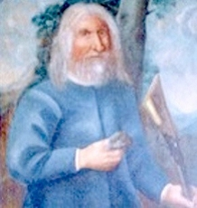

Blev ca 106 år.
omkring 1567 Myren, Tännäs, Hede (Z). [1]
1673 Aasen, Röros, Norge. [1]
Hans Aasen upptäckte kopparmalmen som ledde till grundandet av Røros kopparbruk i mitten av 1600-talet.
Han föddes på gården Myre i Tännäs annex i Herjedalen, som på den tiden tillhörde Norge. Han var den yngste av tre bröder, och när hans bröder hade tagit över faderns gård bestämde han sig för att resa till Trondheim för att försörja sig. På vägen dit kom han till Brekken (i nuvarande Røros kommun), där han fann skogen så rik på vilt och vattendragen så fiskrika att han slog sig ner och röjde en plats där. Det var troligen omkring år 1600. Aasen kom att försörja sig som jägare, fiskare och bonde. Han röjde senare ytterligare tre gårdar, och den sista av dem, Hitteråsen (även kallad Åsen), bodde han på till sin död.
Den tyske gruvarbetaren Lorentz Lossius, som slipade efter malm i bergen i Rørostrakten, besökte Aasen flera gånger 1644 på sina resor till och från den nyupptäckta Rauhammer skarpen. Lossius, som visste att Aasen huvudsakligen livnärde sig på jakt och fiske, bad honom vara medveten om malmförande stenar när han vandrade runt i bergen. Lossius gav Aasen några prover på kopparmalmen från Rauhammer som jämförelsegrund.
Enligt traditionen var Aasen lite senare på jakt i fjället Storvola och stötte på en flock renar. Han sköt ett djur, och när de andra renarna blev skrämda och flydde, upptäckte han en sten med stark lyster som renarna hade skrapat upp under rymningen. Aasen såg att stenen i prakt överträffade de provstenar som Lossius hade gett honom. Han visade stenen för Lossius, som gav sig i kast med att undersöka platsen. Lossius vässade sig ytterligare och fann betydande malmfyndigheter, som senare visade sig vara ett av de största malmfynden i norsk historia. (Aasen ska enligt andra källor ha gjort malmfyndet redan 1620, men höll det hemligt till 1644/45, då han avslöjade platsen för Lossius, som han kan ha känt till sedan tidigare; Ragnvald Støren trodde sig kunna bevisa att Hans Aasen hade arbetat för 1640 Kvikne kopparbruk,
Lossius hävdade att han ensam hade rätten till fyndet och 1645 fick han rätt att utvinna malmen tillsammans med sin svärfar och en annan. De stora kopparfyndigheterna ledde till etableringen av Storwartzgruvan som kom att ligga till grund för Røros kopparverk.
Aasen fick till en början ingen belöning för sin upptäckt och han har nog känt sig försummad. En annan gruvägare, Joachim Irgens, som besökte Rørostrakten 1646, fick kännedom om intrånget och övertalade Aasen att sälja sin rätt som första fynd till honom för en billig peng. Samma år lyckades Irgens säkra omfattande privilegier från kungen och utmanövrera grundarna av Røros kopparverk. Lossius, som fortfarande vägrade erkänna Aasen som den första upphittaren av malmfyndigheterna i Storvola, hamnade i hård konflikt med Irgens. Lossius drog det kortaste strået och avsattes 1651 som chef för kopparverket.
Aasen fick inte mycket glädje av det stora malmfyndet, och den enda belöning han fick i hög ålder var att landshövding Ulrik Frederik Gyldenløve försåg honom med äganderätt och andel av gården Hitteråsen.
Efter Lossius död 1654 satte hans söner upp en gravsten över honom i Røros kyrka, där det bestrids att det var Aasen som hittade de stora malmfyndigheterna i Storvola. Som svar på detta ordnade Joachim Irgens att Aasen porträtterades och att tavlan fick en undertitel där det stod att det var Aasen som hittade de stora kopparfyndigheter som blev Storwartz gruva. Bilden hängdes upp i Røros kyrka, där den fortfarande hänger.
Hans Aasen dog 1675 och var då över 100 år gammal. Han lämnade två söner och blev stamfader till en vida förgrenad familj.